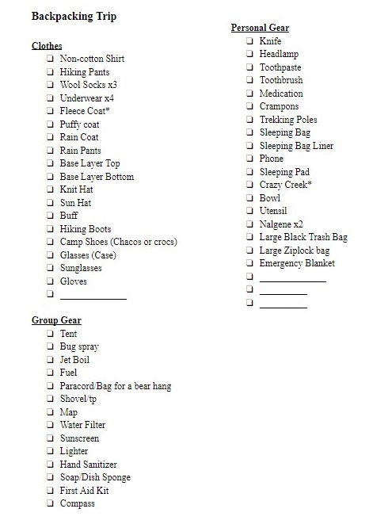
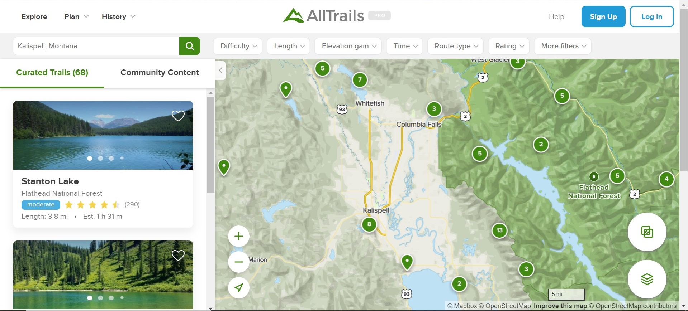

The first thing you need to know about are the "Big Three." The Big three are your sleeping bag (sleeping pag), your tent, and your backpack. Those are the bigger items on your list that you will need to pack. You will also need the Ten Essentials.
After your big three, you will need to remember clothes. With clothes you do not want a lot of clohtes, but rather a multitude of layers, depending on how cold it will be where you are backpacking.
Here is a sample packing list that I have come up with. Feel free to add or take out the things you do not need.
There are so many ways you can pick a trail. I try and pick a trail by the amount of days I want to be out in the woods divided by the amount of miles I want to hike. So if I want to do.
I look up trails by using a combination of apps, the internet, and recomendations from friends. I try and figure out how many miles and how much elevation gain it is. I also make sure to look at weather and what time of year it is. Some trails are not able to be hiked at different points of the year due to trail conditions and weather.
When you are setting a date for leaving always remember to tell someone where you are going. This helps make sure that you and the people you are with are safe.
Some of the apps I use to find trails are TrailForks and AllTrails.

There are 7 Leave No Trace Principles that will help you keep the woods clean so everyone can enjoy it!